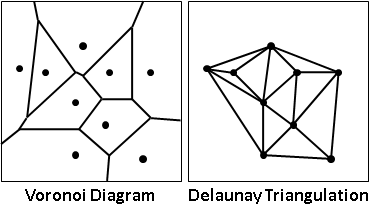
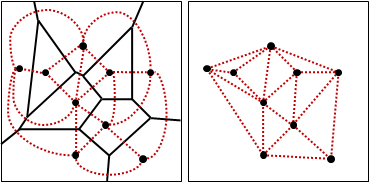
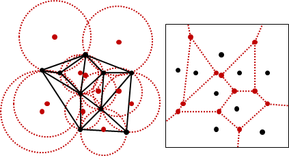
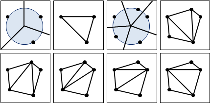
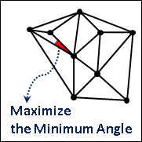
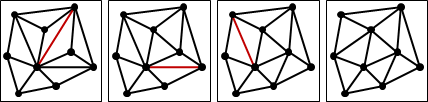
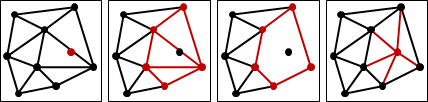

Delaunay Triangulation（Minmax Angle Triangulation）
Voronoi Diagram與Delaunay Triangulation
Delaunay是Voronoi的博士班學生。Delaunay Triangulation起初是從Voronoi Diagram發展來的。
Voronoi Diagram變Delaunay Triangulation：以直線連結相鄰的點。簡單來說就是平面對偶、邊拉直。時間複雜度O(N)。
Delaunay Triangulation變Voronoi Diagram：以直線連結相鄰的三角形的外接圓圓心，並且補上凸包每一條邊的中垂線。時間複雜度O(N)。
Delaunay Triangulation的數量
只有三點以下共圓，Voronoi Diagram與Delaunay Triangulation只有唯一一種，互相對應。
出現四點以上共圓，Voronoi Diagram仍然只有唯一一種，Delaunay Triangulation則有許多種。
性質：三角形外接圓，內部不含任何點

【待補證明】
性質：最小的角盡量大
【待補證明】
Voronoi Diagram與Delaunay Triangulation，聚集了鄰近的點，排斥了偏遠的點。
Voronoi Diagram的外表是中垂線與距離，Delaunay Triangulation的內裡則是圓與角度。
演算法（Edge Flip Algorithm）
隨意求出一個三角剖分。不斷翻轉不符空圓性質的邊，使最小角逐漸增大（或者最小角不變、次小角增大，以此類推），就得到Minmax Angle Triangulation。時間複雜度不明。
【待補證明】
演算法（Incremental Method）
online演算法，隨時維護一個Minmax Angle Triangulation。
每當輸入一點，馬上尋找不符空圓性質的三角形們，形成一個多邊形，清除內部的邊，連接當前輸入點與多邊形頂點們，就得到Minmax Angle Triangulation。時間複雜度O(N^2)。
採用Flip Edge Algorithm，配合特殊資料結構，可以加速至O(NlogN)。此處略過不提。
演算法（Divide and Conquer）
O(NlogN)。